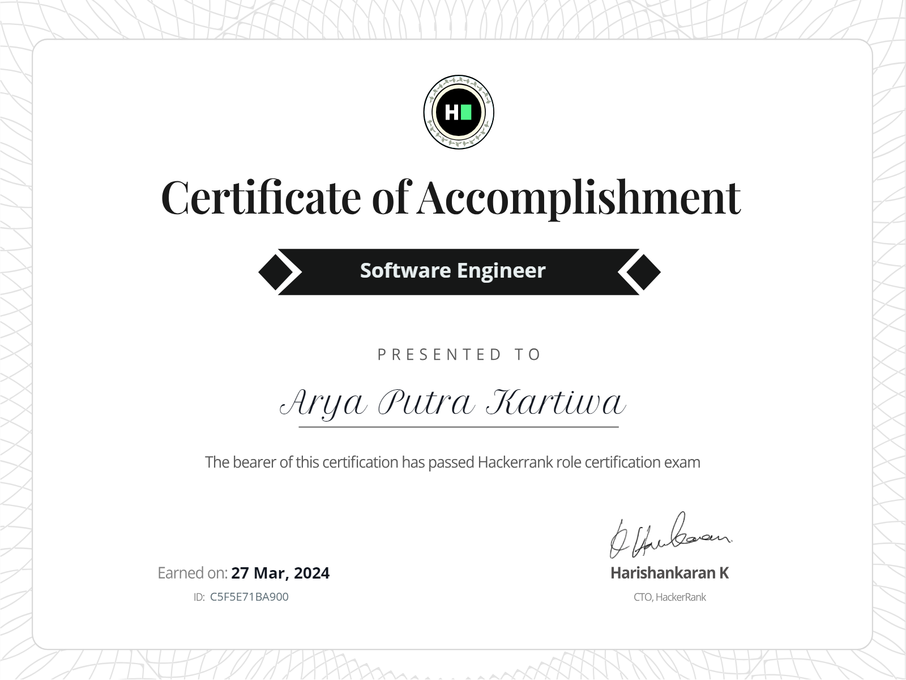
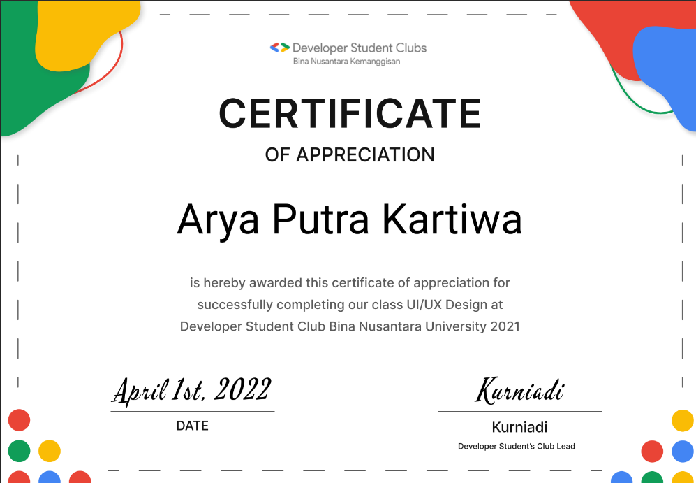
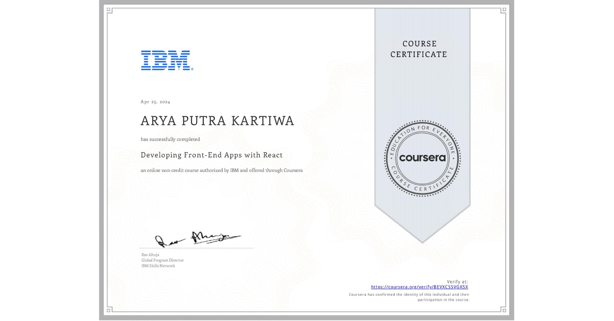
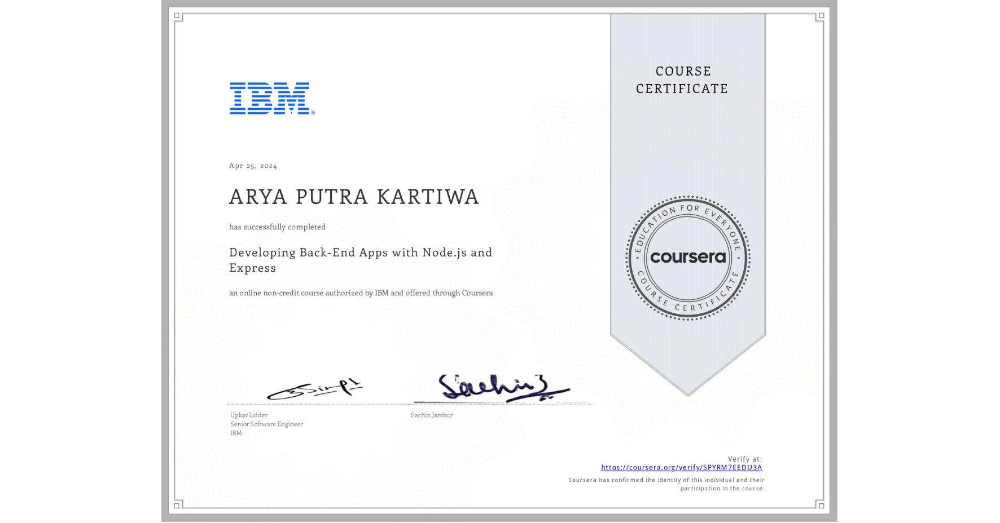

Summary
A passionate computer science graduate from Bina Nusantara University, with professional experience in software development. Excelled
in problem solving, providing strategies and adapting in using all available resources and technologies. Committed to a continuous skill
improvement and utilizing expertise to provide value and make an impact for the company
With a professional experience in software development.
Throughout this professional experience managed to solve any problem that arise,
streamlined software development process by implementing CICD, as well as researching
about new technologies and finding a way to implement to the new technologies into the existing system.
Education
Bina Nusantara University 2020-2024
Computer Science, Software Engineering (3.52 GPA)
SMAK Penabur Kota Wisata 2017-2020
Natural Science Major
Industrial Experience
Nutrifood Indonesia
Application Developer Intern
February 2023 - Febuary 2024
- Developed and improved 10+ internal applications for the company.
- Provided a cost saving solution for the company by researching and implementing new technology into the existing system.
- Solved 100+ submitted tickets from all across the business functions.
- Collaborated with 5 key business functions from the company.
- Helped a struggling developer team to reach their deadline by solving 30% of their tasks from that project, while keeping up with the current personal project.
- Received "One of the best application developer intern Nutrifood ever had" comment from the final presentation.
Organization Experience
Youth In STEM Indonesia
Application Development Teacher
December 2023
- Curriculum Design: Crafted an engaging program covering fundamental app development concepts, catering to diverse skill levels among students.
- Interactive Instruction: Conducted immersive classes, ensuring clarity in explaining intricate programming notions while prioritizing hands-on learning experiences.
- Personalized Guidance: Provided individualized mentorship, aiding students in debugging, problem solving, and refining app performance.
AIESEC in BINUS
AIESEC Future Leader Coach
October 2022 - Jan 2023
Leading and guiding AFL in Binus Winter Peak participant during the program as well as providing the participant a comfortable environment to practice their leadership and communication skill
AIESEC Future Leader Program
April 2022 - July 2022
Learning how to be a leader that can quickly adapt to the current environment and learning to be a well connected individuals.
Google Developer Student Club Bina Nusantara University
Member
November 2021 - July 2022
Creating a prototype using GDSC's design thinking in mind for an app focused in designing a customized healthy habits for it's user.
HIMTI BINUS University
Relation Expansion Activist
February 2021 - January 2023
In charge of representing HIMTI BINUS University to an external entity such as other university and company, also managing and providing content for Bina Nusantara University social media platform.
TechFest Sponsorship Committee
October 2022 - December 2022
In charge of creating sponsorship program for TechFest event, also approaching and making sponsorship deals with companies.
Computerun.id
Sponsorship Committee
April 2021 - January 2022
In charge of creating sponsorship program for Computerun event, also approaching and making sponsorship deals with companies. Successfully established a sponsorship deals with ticket.com, Why Apparel, Dewaweb, and Pinhome.
Software Engineer Certificate
Through this experience, I gained a deeper understanding of object-oriented programming principles, exception handling, and effective Java coding practices. I learned the importance of writing clean, efficient code and optimizing solutions for performance and readability.
Google Developer Student Club UI/UX Certificate
I learned to create a desgin prototype using GDSC's design thinking in mind for an app focused in designing a customized healthy habits for it's user.
IBM Front-End Certificate
Certified in Frontend with React by IBM, showcasing proficiency in building dynamic, responsive user interfaces. Expertise includes mastering React's component-based architecture, state management, and crafting intuitive user experiences. Demonstrates commitment to cutting-edge frontend technologies and readiness to tackle complex challenges in web development.
IBM Back-End Certificate
Certified in Backend Development by IBM, showcasing expertise in designing and implementing robust server-side solutions. Proficient in building scalable and efficient backend systems using industry-leading technologies. Mastery includes database management, API development, and ensuring optimal performance and security. Demonstrates a commitment to delivering reliable and high-performing backend solutions that meet the demands of modern web applications.
Project Management Certificate

I learned about waterfall, agile technique, defining project goals using SMART mehtodologies (Spesific,Measurable,Attainable,Relevant,Time-based) ,working with stakeholder, assigning roles and responsibilities and project management tools.